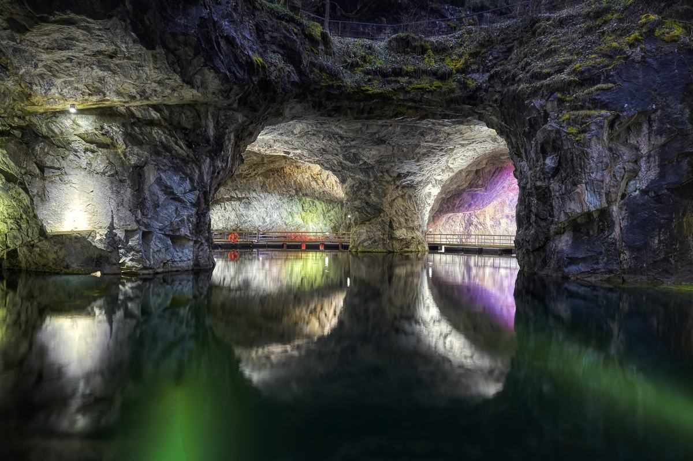
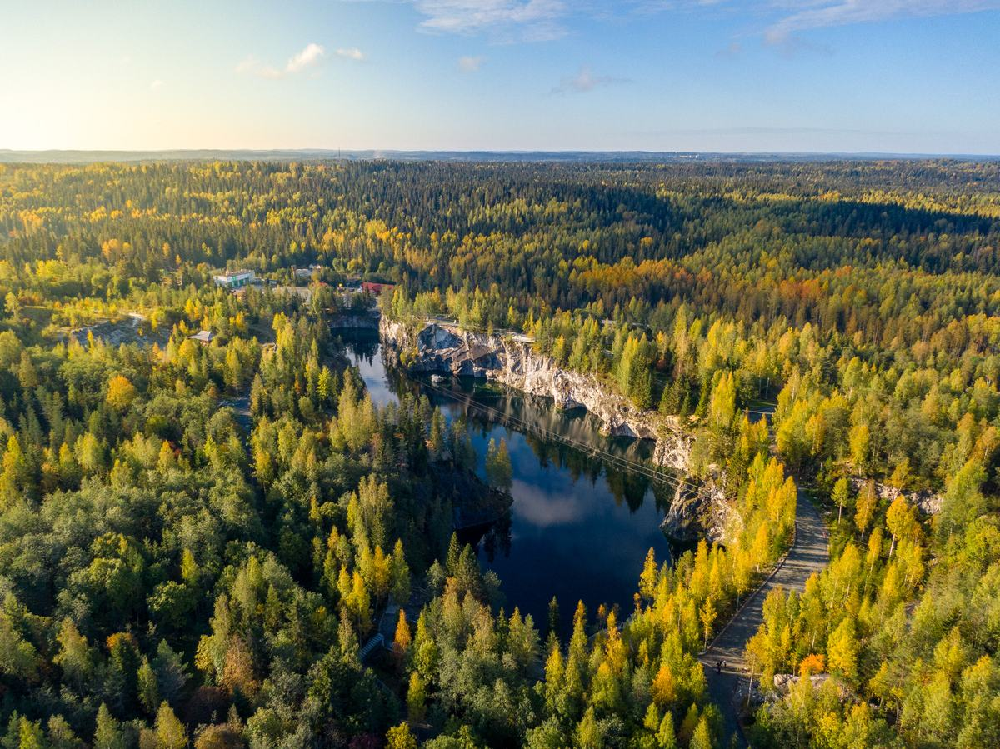

Вход в парк
Входной билет подразумевает посещение Горного Парка Рускеала без получения дополнительных услуг.
Полный билет 750 ₽Карелия, Сортавальский округ
Мраморный каньон, подземные штольни, прогулки по воде, активный отдых и кафе на территории парка.
Что посмотреть
На месте заброшенного мраморного месторождения появился туристический парк с оборудованными дорожками, видовыми площадками, подземными маршрутами и прогулками по воде.

Билеты и подготовка
Входной билет подразумевает посещение Горного Парка Рускеала без получения дополнительных услуг.
Полный билет 750 ₽Студенты, школьники, лица 60+, члены РГО, жители Сортавальского округа и другие категории предъявляют подтверждающий документ.
от 400 ₽Количество билетов на экскурсии ограничено. Стоимость входного билета не входит в стоимость экскурсии.
от 950 ₽/челБесплатные входные билеты для отдельных категорий гостей приобретаются только в кассах. Перед поездкой уточняйте актуальность цен, расписание и доступность услуг по контактам парка.
Экскурсии и развлечения

Наземная часть парка в виртуальном формате.
650 ₽/чел
3D-тур с хранителями парка.
550 ₽/чел
До 20 мин., группа до 20 чел., 0+.
300 ₽/чел
До 60 мин., дистанция 850 м, возрастное ограничение 7+.
2500 ₽/чел
Длительность 1 ч 45 мин, дистанция 2600 м.
1150 ₽/челДлительность 1 ч 15 мин, дистанция 1600 м.
950 ₽/чел
40 минут, до 4 человек, возрастное ограничение 3+.
2200 ₽
30 мин., вместимость платформы до 10 чел., 3+.
600 ₽/чел
Время в пути в одну сторону — 10 минут. Отведенное время на прогулку — 1 час.
250 ₽/чел
Продолжительность от 1 часа, дистанция от 6 км до 100 км, 16+.
8000 ₽/2 чел
Дистанция 400 м, максимальный вес 120 кг, возрастное ограничение 7+.
3000 ₽/чел
Прыжок с веревкой. Высота 20 м, возрастное ограничение 7+.
4000 ₽/чел
Погружения в Мраморном каньоне.
9000 ₽/чел
Панорамные качели над Светлым озером, возрастное ограничение 7+.
2000 ₽/чел
Прокат SUP-бордов, байдарок, рафтов.
от 500 ₽
Личный экскурсовод для самостоятельного путешествия.
500 ₽Мрамору Рускеала около 2 миллиардов лет.
Докембрийские породы сформированы еще до появления сложных форм жизни на Земле.Рускеала детям
На территории выделены детская инфраструктура, Марморики и детская виртуальная экскурсия. Для маленьких гостей есть формат 3D-тура, а входной билет дает доступ к детской игровой территории.
3D-тур с хранителями парка.
550 ₽/челИгровая территория входит в самостоятельное посещение парка по входному билету.
Для экскурсии «Подземная Рускеала» указано ограничение 7+, для прогулок по воде - 3+.
Как добраться
Поезд отправляется с Финляндского вокзала до Сортавала. От Сортавала до парка: автобус, службы такси или ретропоезд.
Отправление от автовокзала «Северный» у метро Девяткино. Время в пути до Сортавала ориентировочно 5-6 часов.
Маршрут: Санкт-Петербург - КАД - Приозерск - А-121 - Сортавала - Рускеала. Расстояние 310 км, ориентир 4-5 часов.
Маршрут идет через Санкт-Петербург и Сортавала. Путь на автомобиле: примерно 1300-1400 км.

Организация питания
В парке работают точки питания для отдыха до или после прогулки: горячие и холодные напитки, выпечка, завтраки, комплексные обеды, блюда европейской и карельской кухни.
Перед визитом
Приобретая входной билет, гость подтверждает, что ознакомился с правилами Парка и обязуется их соблюдать.
Уточнить правилаАктуальные события и расписание мероприятий лучше уточнять перед поездкой по контактам парка.
Уточнить афишуДля уточнения деталей поездки используйте телефон, почту, социальные сети или Telegram-bot.
Перейти к контактамFAQ
Посещение Горного Парка Рускеала без получения дополнительных услуг.
Да, в парке есть оборудованные дорожки и видовые площадки.
Покупку и наличие билетов нужно уточнять по контактам парка. Отдельные бесплатные и льготные билеты оформляются в кассах.
Да, для категорий гостей с правом на льготный билет нужен подтверждающий документ.
Контакты
Нужно уточнить у владельца